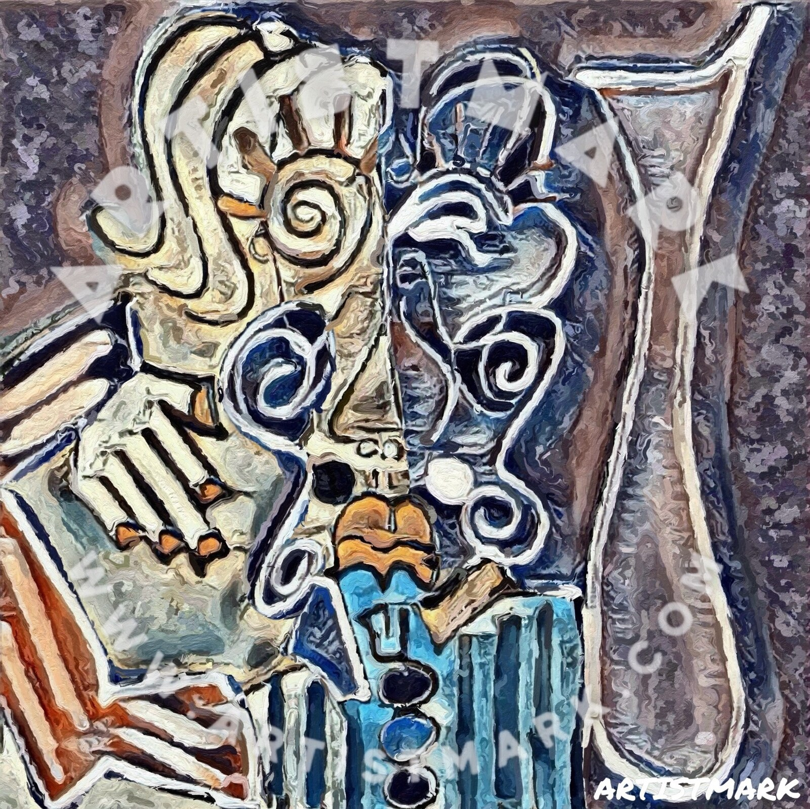
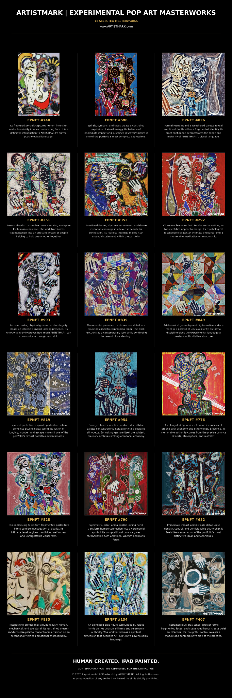

HUMAN
CREATED.
Eighteen masterworks from a distinctly human, digital-native painting practice—imagined by ARTISTMARK and painted by hand on iPad, without generative AI.

A signature
visual language.
“The iPad is the canvas. The Apple Pencil his wand. Human imagination drives every mark.”
Through vibrant color, expressive linework, layered texture, abstraction, and portraiture, ARTISTMARK's Experimental POP ART has developed a distinctive visual language that reimagines contemporary painting for the digital age.

18 masterworks overviewOpen full size ↗18 Masterworks
Selected for stopping power, emotional range, formal invention, and their ability to represent the breadth of ARTISTMARK’s Experimental POP ART practice.
Digital tools.
Painter’s intent.
Every Experimental POP ART composition begins with ARTISTMARK’s original drawings and develops through an intensive, hands-on process of drawing, layering, editing, manipulation, experimentation, and refinement. He also develops and experiments with purpose-built creative applications, approaching digital tools much as a traditional painter might experiment with brushes, pigments, surfaces, and techniques.
Explore the
complete vision.
Discover the ideas, process, artistic positioning, and collection behind ARTISTMARK’s Experimental POP ART practice in this 11-page presentation.
Experience the
work privately.
Request a tailored portfolio presentation, availability information, or a conversation about originals, limited editions, and exhibition opportunities.
Contact ARTISTMARK